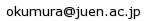
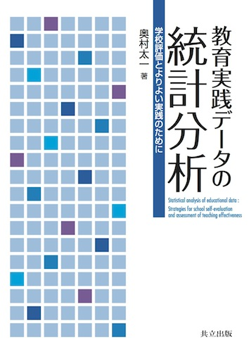

上越教育大学准教授（大学院学校教育研究科・学校教育学系）

|

|
既刊「教育実践データの統計分析」 共立出版 / 2,700円（税込）
教育実践の評価を行うために必要となる統計分析手法を解説しています。数式を極力省き、文章や図による平易な説明を心がけたほか、分析の実行や結果の解釈において注意すべき点についても言及するようにしました。
出版社による目次の紹介はこちら
Amazon
|
お知らせ
- 日本学校メンタルヘルス学会より優秀論文賞（編集委員長賞）・中島一憲記念賞を頂きました。（21/02/14）
- 「特殊教育学研究」に共著論文が掲載されました。(20/11/19)
- ゼミの紹介を更新しました。(20/04/24)
- macOS Catalina で rstan を動かすための手順をここに書きました。(20/04/15)
- 研究分担者として申請していた科学研究費補助金 (基盤C) のプロジェクトが採択されました。(20/04/01)
- 「学校メンタルヘルス」に論文が掲載されました。(20/01/08)
- 業績を追加しました。(19/09/30)
- 業績を追加しました。(19/08/05)
- 研究代表者として申請していた科学研究費補助金（基盤C）が新規採択されました。(19/04/02)
- 大学院の組織再編に伴い、心理臨床コースに異動となりました。(19/04/01)
- CVに紀要論文1編を追加しました。(19/03/11)
- 大学院の組織再編に伴い、4月から心理臨床コースに異動となります。(19/02/23)
- JASPについてのウェブ資料を公開しました。(19/01/17)
- 日本特殊教育学会第56回大会で研究発表を行いました。(18/10/29)
- 紀要論文2編が公開されました。(18/09/21)
- 日本教育心理学会第60回総会で研究発表を行いました。(18/09/18)
- 講義資料とCVを更新しました。(18/02/13)
- CVを更新しました。(17/10/10)
- CVを更新しました。(17/09/29)
- CVを更新しました。(17/06/13)
- CVを更新しました。(17/03/29)
- メモの項目を追加しました。(17/01/06)
- CVを更新しました。(16/12/12)
- CVを更新しました。(16/10/07)
- CVを更新しました。(16/08/29)
- CVを更新しました。(16/06/17)
- CVを更新しました。(16/05/31)
- 研究室紹介を更新しました。(16/04/06)
- 研究分担者として申請していた科学研究費補助金 (基盤C) のプロジェクトが採択されました。(16/04/04)
- 教育連携コースに所属が変更となりました。(16/04/01)
- 研究業績を更新しました。(16/03/25)
- 期末レポートの解答例をここに載せました。(16/02/15) [公開終了]
- Rによる因子分析に関する簡単なハンドアウトをこちらに追加しました。(16/01/30)
- 修士課程の組織再編により、2016年度より教育連携コースに所属が変更となります。(15/12/07)
- Amosによるパス解析のハンドアウトをこちらにアップデートしました。(15/12/07)
- Rによるパス解析に関する簡単なハンドアウトをこちらに追加しました。(15/11/28)
- Rによる変数の標準化に関する簡単なハンドアウトをこちらに追加しました。(15/11/16)
- Rによる外部ファイルの読み込みと回帰分析の実行に関する簡単なハンドアウトをこちらに追加しました。(15/11/16)
- メモに「付加価値モデルの利用に関する声明」に関する項目を追加しました。(15/11/12)
- Rのインストールと使用法に関する簡単なハンドアウトをこちらに追加しました。(15/10/28)
- 「心理学研究」に論文が掲載されました。(15/10/22)
- CVを更新しました。(15/10/05)
- 木曜1限の「学力診断論」について、成績評価の手続きと採点基準を公開しました。(15/08/21) [公開終了]
- CVを更新しました。(15/08/04)
- 期末レポートの解答例をここに載せました。(15/08/03) [公開終了]
- 「心理学研究」に掲載予定の論文について、電子版が早期公開されました。 (15/05/29)
- 科学研究費補助金 (若手B) のプロジェクトが新規採択されました。(15/04/06)
- 「心理学研究」に掲載予定の論文について、書誌情報が公開されました。(15/03/03)
- 期末レポートの解答例をここに載せました。(15/02/09) [公開終了]
- メモに「心理・教育テストのためのスタンダード (2014年版)」に関する項目を追加しました。(15/02/03)
- CVを更新しました。(15/01/26)
- メモに「テストのための指導」に関する項目を追加しました。(14/12/19)
- メモの項目を追加しました。(14/10/30)
- メモの項目を追加しました。(14/10/10)
- 日本学校心理士会大会で教員のメンタルヘルス研究の課題について話題提供を行いました。当日の資料はこちら。(14/08/30)
- 期末レポートの解答例をここに載せました。(14/08/04) [公開終了]
- Educational and Psychological Measurement にPISAに関する論文が掲載されました。(14/07/09)
- 全体のレイアウトを整え、プロフィールを更新しました。(14/04/01)
- テスト理論の資料を作りました。(14/03/23)
- 心理臨床学研究に共著論文が掲載されました。(14/02/18)
- 期末レポートの解答例をここに載せました。(14/02/10) [公開終了]
- ISSI2013で研究発表を行いました。(14/02/05)
- Educational and Psychological Measurement に論文が採択され、電子版が公開されました。(14/01/07)
研究内容
心理統計学とテスト理論が専門です。テストやアンケートを用いて教育データを収集する方法と、得られたデータを統計的に分析する方法について研究を行っています。 具体的には、学校や学級といった集団単位で得られたデータから集団間の差異について検証する方法、縦断的に得られたデータから発達や変化とその個人差を記述する方法、複数の実践結果を統合することでより信頼性の高い知見を導き出すメタ分析の方法などを研究課題としています。
また、共同研究として、教師のメンタルヘルスを評価するためのシステムを構築するプロジェクトや、日本と諸外国の子どもたちの学習行動における文化差を比較するプロジェクトなどにも関わっています。 これ以外にも、提示された刺激への反応時間や正確さから言語には表れないような潜在的な意識を測定したり、電子デバイスなどによって日常生活の場においてデータを収集する方法など、従来のテストやアンケートの限界をふまえた新しい測定法にも興味を持っています。
研究室への配属を希望される方はこちらもどうぞ。
Copyright © 2009- Taichi Okumura All rights reserved.